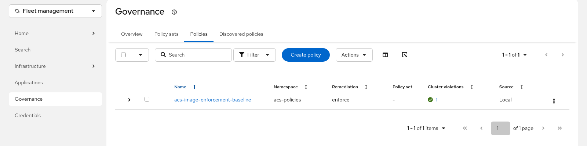

RHACS Image Security Workshop
The policies from Steps 1 to 3 only block images while the ACS secured cluster services run with admission enforcement turned on. One manual edit of the SecuredCluster resource, or its deletion, and the cluster accepts any image again. In this step an RHACM governance policy makes the secured cluster configuration a requirement: RHACM checks it continuously and puts it back when it changes. The cluster is both the RHACM hub and the managed cluster local-cluster, so you can test this with one cluster.
Prerequisites
-
Step 3 completed (the policies are enforced and managed by Argo CD)
-
The RHACM hub from Cluster Setup in the
Runningphase -
source myenv.shrun in your current shell
How it works
RHACM policies live on the hub. A Placement selects managed clusters, a PlacementBinding attaches the policy to the placement, and the configuration policy controller on each selected cluster compares the objects in the policy with what exists there. With remediationAction: enforce and complianceType: musthave, the controller creates the object when it is missing and corrects the listed fields when they differ. Fields the policy does not list are left alone.
The policy in this step requires a SecuredCluster with three admission controller settings: enforcement on, scanning of unseen images, and break-glass allowed. ACS still decides which images to block. RHACM makes sure ACS is in a position to block them.
Steps to apply
1. Check the RHACM hub
What: Confirm that the hub runs and that it manages itself as local-cluster.
Why: The policy targets local-cluster, so that managed cluster has to be joined and available.
oc --context hub get multiclusterhub -n open-cluster-management
oc --context hub get managedcluster local-cluster --show-labelsVerify: local-cluster is joined and available
NAME STATUS AGE CURRENTVERSION DESIREDVERSION MESSAGE
multiclusterhub Running 4h43m 2.17.3 2.17.3 All hub components ready.
NAME HUB ACCEPTED MANAGED CLUSTER URLS JOINED AVAILABLE AGE LABELS
local-cluster true https://api.<cluster-domain>:6443 True True 4h39m cloud=Other,cluster.open-cluster-management.io/clusterset=default,...,local-cluster=true,name=local-cluster,openshiftVersion=4.20.40,...,vendor=OpenShiftThe placement in the next sub-step selects the cluster by the local-cluster=true label.
2. Select the clusters
What: Create the acs-policies namespace, bind it to the global cluster set, and create a placement that selects local-cluster.
Why: The placement decides where the policy applies. Changing its selector later, for example to vendor=OpenShift, extends the same rule to every OpenShift cluster RHACM manages.
oc --context hub apply -f 05-acs-acm/01-policy-namespace.yaml
oc --context hub apply -f 05-acs-acm/02-placement.yamlVerify: The placement selected local-cluster
oc --context hub get placementdecisions -n acs-policies \
-o jsonpath='{.items[*].status.decisions[*].clusterName}{"\n"}'local-cluster3. Apply the ACS baseline policy
What: Create the RHACM policy that requires the SecuredCluster with admission enforcement on.
Why: From now on RHACM reports the cluster as non-compliant the moment the setting changes, and fixes it.
The policy uses ${ACS_CLUSTER_NAME} so that the cluster keeps the name it has in ACS, so it goes through envsubst:
envsubst < 05-acs-acm/03-policy-acs-baseline.yaml | oc --context hub apply -f -In the OpenShift console, switch the perspective at the top of the side navigation to Fleet management and open Governance, then the Policies tab. The policy acs-image-enforcement-baseline appears with remediation enforce, and the Cluster violations column shows one compliant cluster.

Verify: The policy is compliant
oc --context hub get policy acs-image-enforcement-baseline -n acs-policiesNAME REMEDIATION ACTION COMPLIANCE STATE AGE
acs-image-enforcement-baseline enforce Compliant 2sThe SecuredCluster from the setup already had the three admission controller settings, so the policy was compliant within two seconds and RHACM changed nothing. Its generation stayed the same in the minute after, so RHACM and the RHACS operator do not overwrite each other’s work on this resource.
4. Turn admission enforcement off by hand
~1.5 minutes (RHACM restores the setting within a second, then the admission controller rolls out again for about 90 seconds)
What: Set admissionControl.enforcement to Disabled on the SecuredCluster, watch RHACM turn it back on, and try the latest workload again.
Why: This is the shortcut someone takes when a deployment is blocked. The baseline policy reverses it.
oc --context hub patch securedcluster stackrox-secured-cluster-services -n stackrox \
--type merge -p '{"spec":{"admissionControl":{"enforcement":"Disabled"}}}'
for i in $(seq 1 12); do
oc --context hub get securedcluster stackrox-secured-cluster-services -n stackrox \
-o jsonpath='{.spec.admissionControl.enforcement}{"\n"}'
sleep 5
doneOnce the value is back to Enabled and the admission controller has restarted with it, the latest workload is rejected again:
oc --context hub rollout status deploy/admission-control -n stackrox --timeout=300s
oc --context hub apply -f 02-image-compliance/tests/bad-latest.yaml
RHACM put the setting back so fast that the 5-second loop above never printed Disabled. The short change was still enough for the RHACS operator to roll out the admission controller again. On the validation cluster, a server-side dry run of the latest workload, repeated every few seconds, was admitted on and off between about 30 and 90 seconds after the patch. A dry run passes through the same admission webhook as a real request, so a workload created in that window gets admitted. Restrict who can edit SecuredCluster resources with OpenShift RBAC.
|
Verify: RHACM recorded the drift and fixed it
oc --context hub get policy acs-policies.acs-image-enforcement-baseline -n local-cluster \
-o jsonpath='{range .status.details[0].history[*]}{.lastTimestamp}{" "}{.message}{"\n"}{end}' | head -52026-10-08T19:20:31Z Compliant; notification - securedclusters [stackrox-secured-cluster-services] found as specified in namespace stackrox
2026-10-08T19:20:26Z Compliant; notification - securedclusters [stackrox-secured-cluster-services] was updated successfully in namespace stackrox
2026-10-08T19:20:26Z NonCompliant; violation - securedclusters [stackrox-secured-cluster-services] found but not as specified in namespace stackrox
2026-10-08T19:18:33Z Compliant; notification - securedclusters [stackrox-secured-cluster-services] found as specified in namespace stackroxThe newest entry is at the top. RHACM found the drift and fixed it in the same second. RHACM copies the policy into the namespace of each managed cluster with the name <namespace>.<policy>, here acs-policies.acs-image-enforcement-baseline in local-cluster.
5. Delete the secured cluster services
~1 minute (resource recreated after 11s, Deployed after 31s, Sensor and the admission controller ready and the cluster HEALTHY in ACS after 64s)
What: Delete the SecuredCluster resource and watch RHACM create it again.
Why: With musthave, RHACM creates the resource when it is missing, so the secured cluster services come back without anyone running the setup again.
oc --context hub delete securedcluster stackrox-secured-cluster-services -n stackrox --wait=false
oc --context hub get securedcluster -n stackrox -wPress Ctrl+C when the resource appears again, then wait for the services:
oc --context hub wait securedcluster/stackrox-secured-cluster-services -n stackrox \
--for=condition=Deployed --timeout=900s
oc --context hub rollout status deploy/sensor -n stackrox --timeout=600s
oc --context hub rollout status deploy/admission-control -n stackrox --timeout=600s| While the services are gone, nothing enforces the image policies on this cluster. RHACM shortens that window, and the window lasts until the admission controller is ready again. |
The init bundle secrets (sensor-tls, collector-tls, and admission-control-tls) have no owner, so deleting the SecuredCluster leaves them in place. Sensor reconnected with them under the same cluster name and the same cluster ID in ACS.
RHACM recreates the SecuredCluster with only the fields that the policy lists. Settings from the setup that the policy does not mention, such as perNode.taintToleration, fall back to their defaults until someone reapplies the full resource. Put every setting you care about into the policy. The Reset section reapplies the setup version.
|
Verify: ACS sees the cluster as healthy and blocks the latest image again
curl -sk -H "Authorization: Bearer ${ROX_API_TOKEN}" "https://${ACS_CENTRAL_ROUTE}/v1/clusters" \
| jq -r '.clusters[] | [.name, .healthStatus.overallHealthStatus] | @tsv'
oc --context hub apply -f 02-image-compliance/tests/bad-latest.yamlproduction HEALTHY
Error from server (Failed currently enforced policies from RHACS): error when creating "02-image-compliance/tests/bad-latest.yaml": admission webhook "policyeval.stackrox.io" denied the request:
The attempted operation violated one or more enforced policies, described below:
...Extending this to more clusters
The workshop runs on one cluster, so the placement only selects local-cluster. On a fleet, a new managed cluster also needs the RHACS operator subscription and its own init bundle or cluster registration secret before a SecuredCluster can connect to Central. The community policy-collection repository has RHACM policies that install the operator and distribute the bundle with hub templates. This session does not cover or test that path.
What this solves
| Problem from Step 3 | How this step solves it |
|---|---|
Admission enforcement can be turned off on the cluster, or the secured cluster services removed |
The RHACM baseline policy detects the change and restores the |
What this does NOT solve (yet)
| Remaining problem | Addressed in |
|---|---|
A new managed cluster also needs the RHACS operator and an init bundle before this policy can create its |
Extending this to more clusters (not part of this session) |
Nothing proves that an image came from your build pipeline |
Image signature verification (Step 4), not part of this session |
A short window without enforcement remains while RHACM restores the services |
Restrict who can edit |
Alternatives considered
| Approach | Notes |
|---|---|
RHACM configuration policy on the |
Reports compliance per cluster and fixes drift. Uses the placement model RHACM already uses for the fleet. |
Argo CD Application for the |
Also fixes drift with self-heal. Has no compliance reporting per cluster and no standard mapping to controls such as NIST CM-2. |
OpenShift RBAC only |
Limits who can change the resource, which you want anyway. Does nothing when someone with access makes the change. |
Reset
This returns the cluster to the state at the end of Step 3. The test workload goes first in case one of the checks let it through. Deleting the policy does not delete the SecuredCluster, because the configuration policy keeps the objects it created. The last command reapplies the Step 0 SecuredCluster so that its other fields match the setup again.
# 1. Test workload (normally rejected)
oc --context hub delete -f 02-image-compliance/tests/bad-latest.yaml --ignore-not-found
# 2. RHACM policy, placement, and namespace
oc --context hub delete policy acs-image-enforcement-baseline -n acs-policies --ignore-not-found
oc --context hub delete -f 05-acs-acm/02-placement.yaml --ignore-not-found
oc --context hub delete -f 05-acs-acm/01-policy-namespace.yaml --ignore-not-found --wait
# 3. SecuredCluster back to the Step 0 definition
envsubst < 00-setup/04-secured-cluster.yaml | oc --context hub apply -f -
oc --context hub wait securedcluster/stackrox-secured-cluster-services -n stackrox \
--for=condition=Deployed --timeout=900s